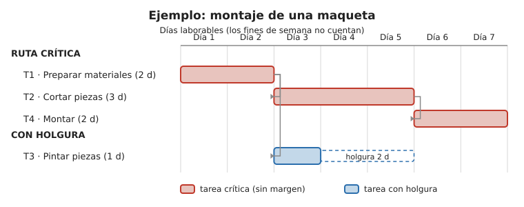

Contenido
Sesión 4
Para qué sirve un diagrama de Gantt
El diagrama de Gantt es la herramienta más usada para planificar en el tiempo un proyecto. Es un gráfico de barras horizontales donde:
- cada fila es una tarea,
- el eje horizontal es el tiempo,
- la longitud de cada barra indica cuánto dura la tarea,
- y la posición indica cuándo empieza y cuándo termina.
De un vistazo se ve qué se hace en cada momento, qué tareas se solapan y cuándo debe estar todo terminado.
Cómo se construye, paso a paso
- Descomponer el proyecto en tareas concretas y manejables.
- Estimar la duración de cada tarea.
- Definir dependencias: qué tareas no pueden empezar hasta que otra termine.
- Colocar las barras en el tiempo respetando esas dependencias.
- Asignar responsables a cada tarea.
Ejemplo
Veamos el montaje de una pequeña maqueta. El calendario excluye los fines de semana (solo cuentan días laborables):

T2 y T3 empiezan las dos al terminar T1, pero T4 necesita que ambas estén acabadas. La cadena más larga es T1 → T2 → T4 (2 + 3 + 2 = 7 días laborables): son las tareas críticas (en rojo), las que no pueden retrasarse sin retrasar todo el proyecto. En cambio, T3 dura solo 1 día y después espera a que termine T2: tiene 2 días de holgura (podría empezar más tarde o alargarse hasta 2 días sin mover la fecha final).
Consejo
No hagas tareas gigantes (“hacer el proyecto”) ni minúsculas (“abrir el programa”). Una buena tarea cabe en una o dos sesiones y tiene un resultado claro.
Tareas críticas y holgura
No todas las tareas pesan igual en el calendario:
- Una tarea crítica es la que, si se retrasa, retrasa el final de todo el proyecto. No tiene margen.
- La holgura es el margen de tiempo que una tarea no crítica puede retrasarse sin mover la fecha final.
En el Gantt se intuyen mirando las cadenas de tareas encadenadas sin huecos: la cadena más larga marca la duración del proyecto y sus tareas son las críticas; las tareas con tiempo libre antes de la siguiente dependencia tienen holgura.
Nota
El cálculo exacto de la ruta crítica y de la holgura de cada tarea se hace con la técnica PERT/CPM, que verás en la siguiente sesión. En el Gantt basta con identificarlas y, si la herramienta lo permite, resaltar la ruta crítica.
Pruébalo tú
Lo de arriba se entiende mucho mejor moviendo las barras que leyéndolo. En el diagrama de abajo puedes retrasar T3 (la que tiene holgura) y T2 (que es crítica). Fíjate solo en una cosa: ¿se mueve la fecha de fin del proyecto?
La holgura, en directo
Prueba a retrasar T3 un día: no pasa nada. Al segundo agota su holgura y ya es crítica. Al tercero, la fecha de fin del proyecto se desplaza. Con T2, en cambio, basta un día. Ahí está toda la diferencia entre tener margen y no tenerlo.
Ventajas e inconvenientes del diagrama de Gantt
Ventajas
- Es visual e intuitivo: de un vistazo se ve el plan completo.
- Muestra muy bien las duraciones, los solapamientos y las fechas.
- Facilita la comunicación del plan y el seguimiento del avance.
Inconvenientes
- En proyectos muy grandes se vuelve complejo y difícil de leer.
- No refleja con precisión la importancia de las dependencias ni calcula por sí solo la ruta crítica y la holgura (para eso, PERT/CPM).
- Hay que actualizarlo cada vez que cambia el plan.
- Por sí solo no muestra recursos ni costes.
Tarea evaluable — Diagrama de Gantt (documentación técnica)
Tu tarea
TRABAJO INDIVIDUAL cada persona entrega el suyo
Elabora, con una herramienta digital, el diagrama de Gantt de un proyecto con datos ya definidos. Se evalúa como documentación técnica.
Proyecto: instalar una estación meteorológica en el centro.
| Tarea | Descripción | Duración (días laborables) | Depende de |
|---|---|---|---|
| A | Definir requisitos | 2 | — |
| B | Conseguir materiales | 2 | A |
| C | Diseñar el soporte | 4 | A |
| D | Montar el circuito | 3 | B |
| E | Fabricar el soporte (impresión 3D) | 2 | C |
| F | Integrar y probar | 3 | D y E |
| G | Documentar y presentar | 2 | F |
Calendario:
- El proyecto empieza el lunes 5 de octubre de 2026.
- No se trabaja sábados, domingos ni festivos.
- Festivo: lunes 12 de octubre de 2026 (Fiesta Nacional).
Qué tienes que hacer:
- Calcula primero en el cuaderno el calendario laboral: partiendo del lunes 5 de octubre de 2026 y sin contar sábados, domingos ni el festivo, halla la fecha de inicio y de fin de cada tarea y la fecha de finalización del proyecto.
- Abre LazyTools — Gantt Chart Maker: funciona en el navegador, sin instalar nada y sin cuenta. Añade las tareas con las fechas que has calculado y enlaza las dependencias.
- Pulsa ⚡ Critical Path para resaltar las tareas críticas; comprueba que coinciden con las que esperabas e indica cuáles tienen holgura.
- Anota la fecha de finalización del proyecto.
- Exporta el diagrama (↓ PNG) y súbelo a la tarea Diagrama de Gantt de Moodle.
Nota: el diagrama mostrará también los fines de semana en la escala; lo importante es que las fechas de inicio y fin que introduzcas caigan en días laborables (según tu cálculo del paso 1).
Tarea del proyecto
El Gantt de vuestro proyecto
TRABAJO EN EQUIPO una sola entrega por equipo
La tarea de arriba se hace con un proyecto ya cerrado, para practicar. Ahora toca lo de verdad: el cronograma de vuestro propio proyecto, el que ideasteis en la S3. Añadidlo a la fase de Gantt de la plantilla del plan de proyecto (enlace en la portada):
- Descomponed vuestro proyecto en 6 o 7 tareas concretas y manejables. Ni gigantes («hacer el proyecto») ni minúsculas («abrir el programa»).
- Estimad la duración de cada una y decidid las dependencias: qué no puede empezar hasta que otra termine. Buscad que al menos dos tareas puedan ir en paralelo: si todas van en fila, el proyecto dura lo que la suma de todas y no habrá nada que optimizar.
- Asignad un responsable a cada tarea, de acuerdo con vuestros roles.
- Dibujadlo en LazyTools, exportadlo a PNG e insertadlo en el plan, junto a la lista de tareas con su duración, dependencias y responsable.
- Señalad cuáles son vuestras tareas críticas y cuáles tienen holgura.
No hace falta terminarlo hoy: el plan se entrega en la S9, así que podéis rematarlo fuera de clase. Lo que sí conviene es salir de esta sesión con la lista de tareas cerrada.
Ejercicios
Recuerda
TRABAJO INDIVIDUAL cada persona entrega el suyo
Resuelve primero en el cuaderno y luego pasa tus respuestas a tu copia de la plantilla en Drive (la que creaste desde la portada). Al terminar la unidad, descarga la plantilla en PDF (Archivo → Descargar → Documento PDF) y súbelo a la tarea Ejercicios de la unidad de Moodle. La tarea está abierta desde la primera sesión, pero no pulses «Entregar» hasta la última: es un solo documento con los ejercicios de las nueve.
- Enumera las tareas de “organizar una excursión de clase” y ordénalas por dependencias.
- En el ejemplo de arriba, ¿qué dos tareas podrían solaparse sin problema? ¿Por qué?
- Dibuja el Gantt de un proyecto tuyo de 3 tareas con una dependencia entre dos de ellas.
Verdadero o falso
Ruta crítica y holgura son los dos conceptos que más se confunden. Decide si cada afirmación es verdadera o falsa.
00:00: